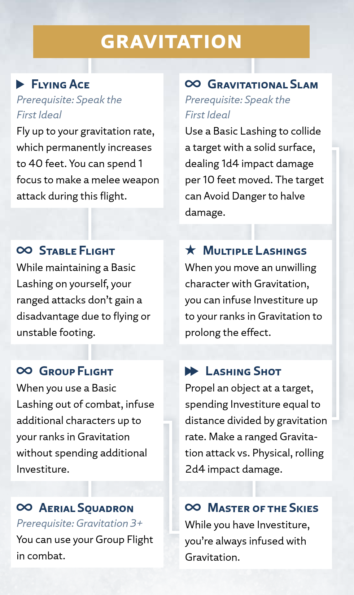

Gravitation
Awareness
The surge of Gravitation can change the direction and magnitude of an object's gravitational attraction. Gravitation infusions temporarily draw an object to another point instead of the planet's center of gravity. This is known as a Basic Lashing.
Gravitation Surge
Radiant Orders: Skybreaker, Windrunner
Activation: ▶
To perform a Basic Lashing, spend 1 Investiture or more to infuse a character or object within your reach; you must have a hand free and touch the target. Your target can't exceed the surge size for your ranks in Gravitation (see the Surge Scaling table at the beginning of this chapter).
The infusion uses 1 Investiture each round, and for the duration, the target's gravity changes directions (as described below in "Targeting a Character" and "Targeting an Object"). This change uses your gravitation rate, which begins at 25 feet.
Your target doesn't move fast enough to deal damage on impact. However, if a target is aloft when the surge ends, they fall and take the usual damage from the fall (see "Movement and Positioning" in chapter 10).
Targeting a Character. You can target a willing character, granting them a flying rate equal to your gravitation rate for the duration. (For rules on flying, see "Movement and Positioning" in chapter 10.)
Alternatively, you can infuse yourself with Gravitation regardless of your size, gaining the same flying rate and spending 1 Investiture each round to maintain the surge.
To target an unwilling character, see "Gravitation on Others."
Targeting an Object. You can target an object, declaring a new direction for its gravity. At the start of each of your turns, after the infusion expends another 1 Investiture, move that object in a straight line up to your gravitation rate.
You can't use this surge on Invested objects (like Shardplate) or objects that have been infused with Stormlight (like infused spheres or objects affected by surges).
Using Gravitation
In addition to the basic surge rules above, this section provides more guidance on using or interacting with this surge in your game.
Gravitation on Others
Performing a Basic Lashing on an unwilling character is challenging. To do so, make a Gravitation test against the target's Physical defense. On a success, spend 1 Investiture to move the target up to your gravitation rate in a direction of your choosing.
When you move an unwilling target in this way, they become Restrained until the start of your next turn. During this movement, if the target passes within reach of an object or surface at least one size larger than them, they can attempt to grab it by using the Avoid Danger reaction to make an Agility test opposed by your Gravitation (their Restrained condition doesn't impose a disadvantage on this test). If your target succeeds, they stop moving; while they continue holding on, you can't move them further with this infusion.
Tricky Maneuvers
When flying or moving something with a Basic Lashing, you don't usually need to make a test. However, if you're attempting something particularly dangerous or tricky—such as flying through a highstorm or threading an object through a small gap—you must succeed on a Gravitation test to perform the Lashing (DC set at the GM's discretion).
Gravitation Talent Tree
Gravitation Talents
The following talents, presented here in alphabetical order, appear in the Gravitation talent tree for the Skybreaker and Windrunner paths.
Aerial Squadron
Prerequisite: Gravitation 3+; Group Flight talent
Activation: ∞
You've trained your allies in aerial combat scenarios, readying them to fly together at a moment's notice.
You can use your Group Flight in combat.
Flying Ace
Prerequisite: Speak the First Ideal
Activation: ▶
You are a master of the skies, adeptly wielding your weapon while in flight.
While maintaining a Basic Lashing on yourself, fly a distance up to your gravitation rate. Once during this movement, you can spend 1 focus to make a melee weapon attack as part of the same action. After resolving that attack, you can continue your movement.
Additionally, when you acquire this talent, your gravitation rate increases to 40 feet.
Gravitational Slam
Prerequisite: Speak the First Ideal
Activation: ∞
Your Basic Lashings become more forceful and potentially dangerous on impact.
When you use a Basic Lashing to move an unwilling creature or object into a solid surface, the collision stops that movement early, and you can choose for the Lashed target to take 1d4 impact damage for every 10 feet they were moved with that Lashing on this turn. For example, if you moved them 25 feet then they collide with a wall, they take 2d4 impact damage.
Your target can use the Avoid Danger reaction to make an Agility test opposed by your Gravitation, taking half as much damage on a success.
The size of these damage dice increases with your ranks in Gravitation; at 2 ranks, roll 1d6 (instead of 1d4), and so on.
Group Flight
Prerequisite: Stable Flight talent
Activation: ∞
You can infuse multiple allies with Gravitation at once.
While not in combat, when you spend 1 Investiture or more to infuse yourself or a willing character with a Basic Lashing, you can also infuse a number of additional willing characters up to your ranks in Gravitation. Each target must be within your reach. These infusions last for the duration of the original infusion and require no additional Investiture to create or maintain.
Lashing Shot
Prerequisite: Gravitational Slam talent
Activation: ▶▶
You apply multiple Basic Lashings to an object, launching it with several times the force of gravity.
You touch an unattended object of a size you can affect with your ranks in Gravitation, then you propel that object at a target in your line of effect, spending Investiture equal to the distance to that target divided by your gravitation rate (rounded up).
Make a ranged Gravitation attack against the Physical defense of that target, rolling 2d4 impact damage. The size of these damage dice increases with your ranks in Gravitation; at 2 ranks, roll 2d6 (instead of 2d4), and so on.
Master of the Skies
Prerequisite: Group Flight talent or Lashing Shot talent
Activation: ∞
You've become so efficient at infusing yourself with Gravitation that it becomes subconscious, allowing you to endlessly soar.
While you have 1 Investiture or more, you gain the benefits of being infused with Gravitation without spending Investiture.
Multiple Lashings
Prerequisite: Gravitational Slam talent
Activation: ★
You can apply multiple Basic Lashings to an enemy.
After you succeed on a Gravitation test to move an unwilling character, you can infuse them with an amount of Investiture up to your ranks in Gravitation (instead of only 1 Investiture). When you do, the effect continues until the infusion ends (instead of until the start of your next turn).
Stable Flight
Prerequisite: Flying Ace talent
Activation: ∞
You're an expert in launching attacks from afar in mid-flight.
While maintaining a Basic Lashing on yourself, your ranged attacks don't gain a disadvantage due to flying or other causes of unstable footing.